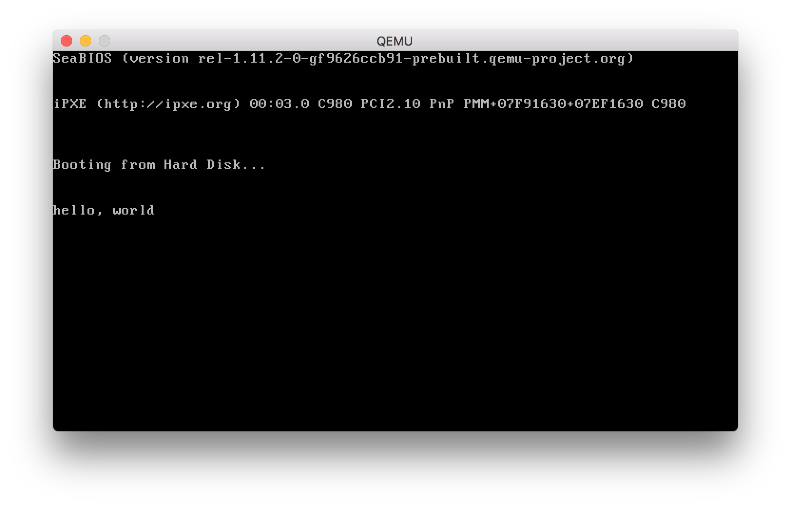

目的
書籍「30日でできる！OS自作入門」を参考に OS を自作し、OS の仕組みを学習する。
この書籍では、Windows OS やフロッピーディスクを前提に記述されているが、mac で実行できるよう適宜内容を変更して実施する。
また、書籍内で使用されている著者の独自スクリプトやコマンドも使用せず、汎用的なものをなるべく使用するようにする。
概要
Day0 では、mac で OS を自作するための環境構築手順について説明していく。
資材の配置
HariboteOSという名前のディレクトリをホームディレクトリに作成する。1
$ mkdir ~/HariboteOS
下記のサポートサイトより、HariboteOS.zip をダウンロードし、解凍する。
解凍された HariboteOS.iso をマウントし、projects ディレクトリを ~/HariboteOS ディレクトリ配下にコピーする。
projects ディレクトリには、書籍に掲載されているソースコードがセクション毎に格納されている。
qemu のインストール
brew で qemu をインストールする。1
$ brew install qemu
qemu のバージョンを確認する。1
2
3$ qemu-system-i386 -version
QQEMU emulator version 3.0.0
Copyright (c) 2003-2017 Fabrice Bellard and the QEMU Project developers
qemu を使用し、HariboteOS を実行をし、正常に動作するか確認する。1
2$ cd ~/HariboteOS/projects/01_day/helloos0
$ qemu-system-x86_64 -drive format=raw,file=helloos.img
プロンプトが開き、”hello, world” と表示されていれば問題ないので、プロンプトを閉じる。

バイナリエディタ(0xED) のインストール
以下のサイトから 0xED をダウンロード後、解凍し、0xED.app ファイルをアプリケーションディレクトリへコピーしておく。
nasm のインストール
アセンブラのプログラミングで使用する nasm をインストールする。1
$ brew install nasm
nasm のバージョン情報が表示されれば問題ない。1
2$ nasm -v
NASM version 0.98.40 (Apple Computer, Inc. build 11) compiled on Jun 4 2018
gdb のインストール
デバッグ用途で使用する gdb もインストールしておく。1
$ brew install gdb
正常にインストールされていれば、gdb のバージョン情報が表示される。1
2
3
4
5
6
7
8
9
10
11
12
13
14
15$ gdb --version
GNU gdb (GDB) 8.1.1
Copyright (C) 2018 Free Software Foundation, Inc.
License GPLv3+: GNU GPL version 3 or later <http://gnu.org/licenses/gpl.html>
This is free software: you are free to change and redistribute it.
There is NO WARRANTY, to the extent permitted by law. Type "show copying"
and "show warranty" for details.
This GDB was configured as "x86_64-apple-darwin17.7.0".
Type "show configuration" for configuration details.
For bug reporting instructions, please see:
<http://www.gnu.org/software/gdb/bugs/>.
Find the GDB manual and other documentation resources online at:
<http://www.gnu.org/software/gdb/documentation/>.
For help, type "help".
Type "apropos word" to search for commands related to "word".
参考URL
- 「30日でできる！ OS自作入門」サポートページ
- バイナリエディタ(0xED)配布サイト